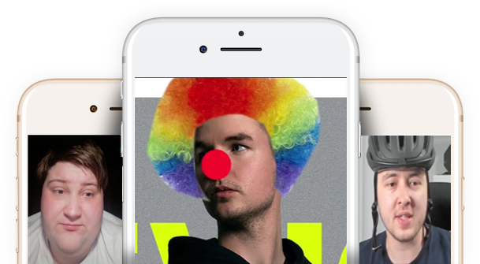

Counter Strike: Global Offensive
Tomasz Olszewski

O grze
Powstanie gry
Counter Strike: Global Offensive to czwarta odsłona głównej serii wydana przez Valve w 2012 roku.
WięcejRozgrywka
Jest to wieloosobowa gra pierwszoosobowa z gatunku strzelanek, w której występują dwie drużyny: terroryści i antyterroryści.
WięcejCele
Zadaniem terrorystów jest podłożenie bomby, zaś antyterroryści bronią terenu przed podłożeniem ładunku.
WięcejRangi
W grze występuje podział na system rang. Silver 1-6, Gold 1-4, MG 1-2, MGE, DMG, LE, LEM, Supreme, Global Elite.
WięcejWyposażenie
W grze występuje sześć kategorii wyposażenia: pistolety, broń ciężka, pistolety maszynowe (PM-y), karabiny, granaty oraz dodatkowy sprzęt.
WięcejTryb gry
W grze występuje wiele trybów gry, jednak najbardziej popularny jest turniejowy, gdzie gra się maksymalnie 30 rund 5vs5.
WięcejReszta informacji
Operacje
W tej grze dodawana są tymczasowe wydarzenia, które polegają na wykonywaniu zadań.
Skiny
Skórki do broni, które urozmaicają wygląd broni są dostepne do kupienia za prawdziwe pieniądze.
Profesjonalna rywalizacja
Największe turnieje CSGO są organizowane przez Valve i nazywane są Majorami.
Ilość graczy
Na ten moment w tę grę gra średnio milion osób dziennie.
Polscy zwycięzcy majora
Virtus Pro, bo bowiem w tej organizacji Polscy zawodnicy tj. Jarosław „pashaBiceps” Jarząbkowski, Filip "NEO" Kubski, Wiktor "Taz" Wojtas, Paweł "byali" Bieliński oraz Janusz "Snax" Pogorzelski wygrali w katowickim spodku największy turniej CS'a, czyli Majora (ESL Major Series One Katowice 2014).
Pobierz CS:GO